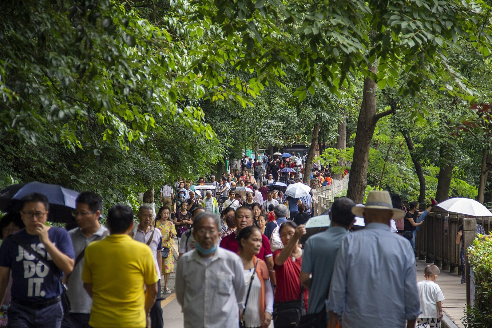

到贵阳 · 只歇
不排景点
- 深圳北 G2942。中午前后到贵阳。
- 入住观山湖或喷水池一带。电梯房，能加婴儿床最好。全程四晚住这。
- 甲秀楼河边走走。晚饭酸汤牛肉或肠旺面。
晚饭参考贵厨酸汤牛肉（花果园国际中心店）携程 4.3 / 47 评 / 人均约 ¥65，酸汤偏温和。甲秀楼附近黔诚·多彩火锅 4.0 / 8 评 / 人均约 ¥62，样本量小，备选。蒋家肠旺面馆（合群路店）携程约 4.8 / 人均约 ¥18，小孩能吃面。
住 · 贵阳第 1 晚店名等日期定了再锁。
避坑别当天赶黄果树。六个小时高铁加两个三岁的，到了就歇。